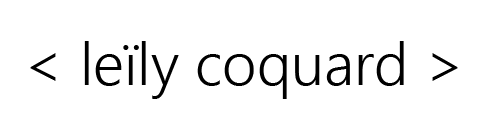
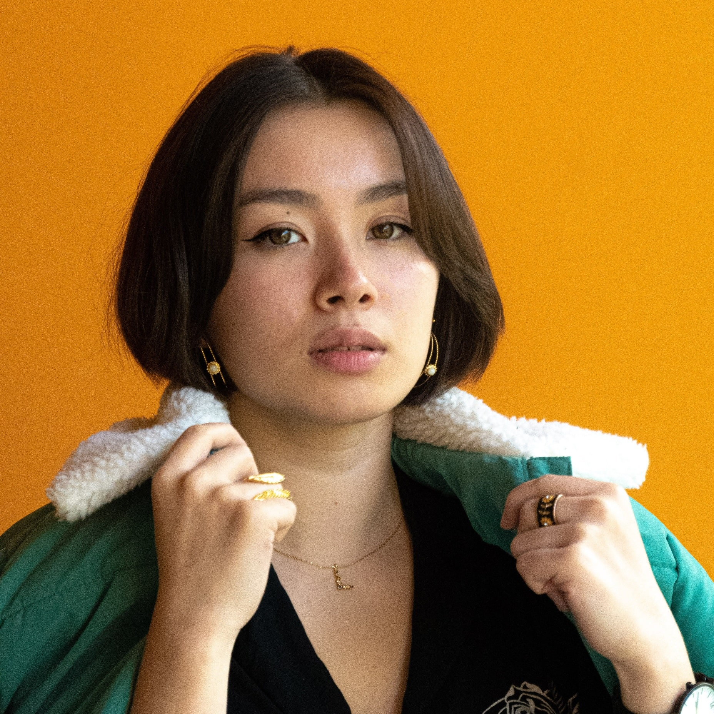
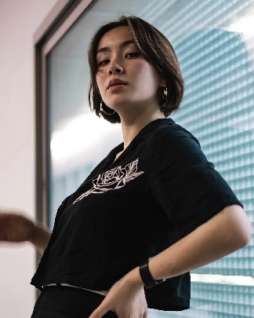

Mes réalisations
Une petite sélection

Votre future stagiaire ?

J'ai toujours un peu touché au HTML et CSS, mais je m'y suis mise plus sérieusement depuis ma rentrée à MMI dans le but d'apprendre par la suite le js, ainsi que l'ux et ui design. Pour rentrer à MMI, j'ai codé un site regroupant mes travaux, que vous pouvez retrouver ici.
Je réalise des illustrations sur Photoshop et Illustrator, ainsi que sur Clip Studio Paint. J'aime également animer mes dessins sur After Effects. J'ai un compte instagram ici, que j'ai cessé d'alimenter depuis la rentrée, le temps de m'améliorer et de me perfectionner.
J'ai découvert l'informatique via le C et le C++ où j'ai notamment codé un robot avec un ami, avant de continuer avec le Python à l'Université de Bordeaux.
Étudiante en première année de MMI Bordeaux
Après un bac S mention Très Bien en option informatique, je me suis dirigée vers une licence Mathématiques et Informatique, que j'ai quitté au bout de deux ans après avoir fait de la programmation C, du Python, de l'algorithmie des tableaux entre autres. Le but du BUT Métiers du Multimédia et de l'Internet Bordeaux étant de nous professionnaliser, nous devons faire des stages dès la première année dans notre domaine d'intérêt, pour ma part le développement web et tout particulièrement l'ux/ui design. Nous aurons des ateliers sur ce thème dès le 8 novembre, mais je suis assez curieuse donc j'apprends en autodidacte, avec des tutoriels pour Adobe XD et Figma sur youtube, ou toute autre plateforme disponible.
En dehors des cours, j'aime courir les matins sur les quais avec de la musique dans les oreilles, jouer un peu de violoncelle, regarder des séries (je reregarde Brooklyn Nine Nine et Good Omens), sortir boire un verre (bière blanche et vin blanc), et manger des crêpes. On me décrit comme étant énergique, créative, et extrêmement curieuse, pourquoi pas le vérifier de vous-même autour d'un verre ?

Une petite sélection